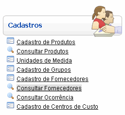
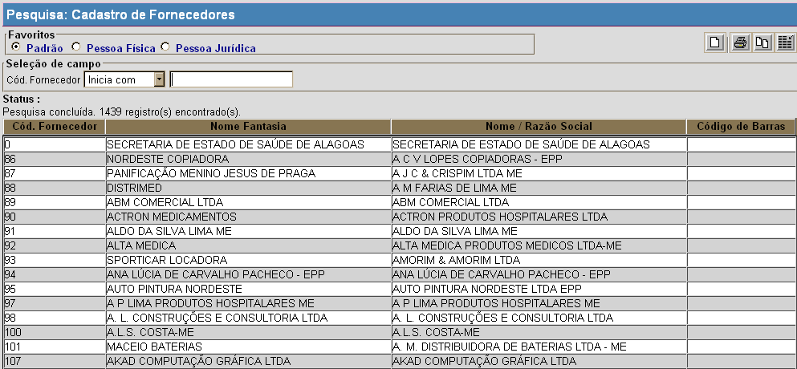
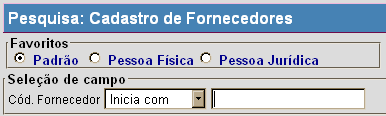
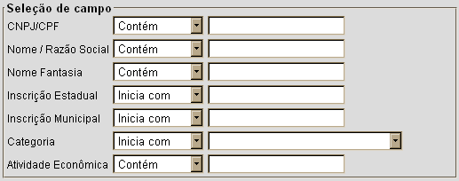

Consultar Fornecedores [ Voltar ]Este formulário permite a localização e conferência de dados dos fornecedores cadastrados. O formulário "Consultar Fornecedores" encontra-se dentro do menu "Cadastros". 
Ao clicar no formulário, o sistema exibirá a seguinte tela: 
Siga os passos abaixo para pesquisar um fornecedor: 1° Passo: no topo da tela, selecione na seção "Favoritos" o tipo de pesquisa desejada.  Cada tipo de pesquisa oferece um perfil diferente de busca:
2° Passo: utilize os filtros para refinar sua pesquisa e facilitar a localização do fornecedor desejado. Para mais informações sobre as funcionalidades da pesquisa, favor ver o manual Introdução ao Sistema. 
Após inserir o contéudo desejado nos campos da pesquisa, os resultados da pesquisa são exibidos automaticamente na tabela de resultados abaixo. Selecione com um clique o fornecedor cujo cadastro deseja visualizar. O mesmo será, então, aberto na tela "Cadastro de Fornecedores". |